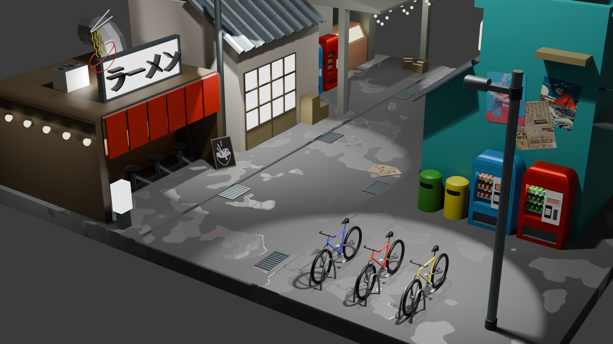

Takaya Ueno

Welcome to my portfolio! I’m a university student passionate about mathematics, animation and video games!

Tokyo Night Alley
A Tokyo-inspired alley created in Blender feating low poly architecture.
View on GitHub
i3 Ricing Arch Linux
Custom ricing setup for Arch Linux with i3wm, polybar, and a custom terminal setup.
View on GitHub
Shadow Blade
A 2D platformer game built using C# and Unity, featuring AI-driven enemies, UI elements, and hand-drawn sprites.
View on GitHub